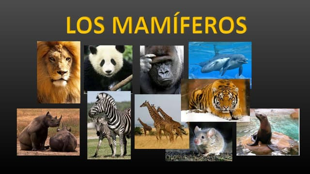
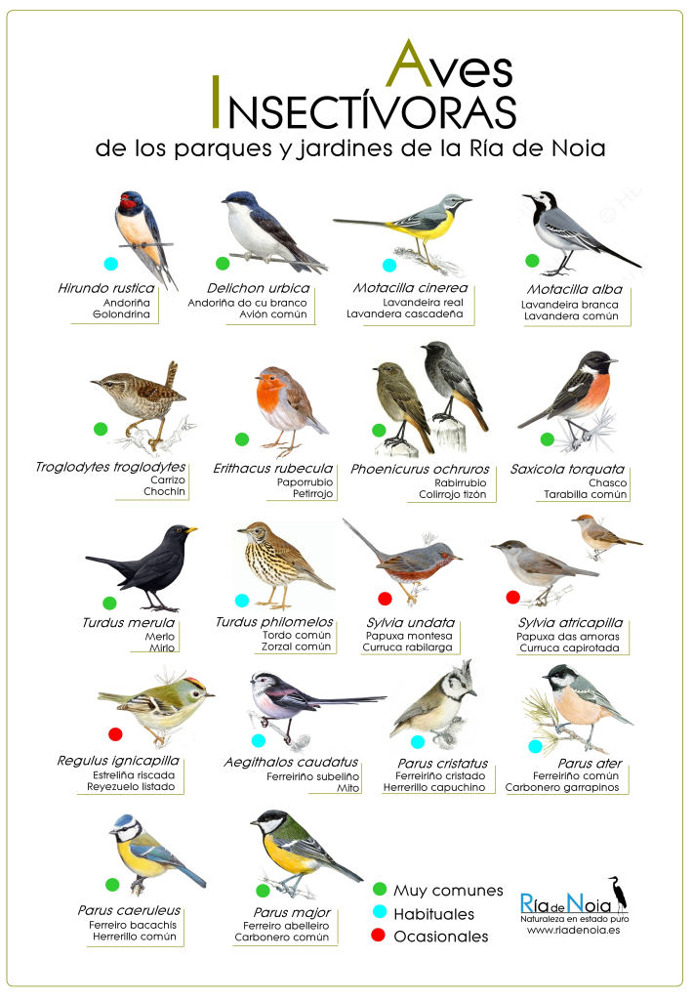

Mamíferos
Los mamíferos son animales vertebrados de sangre caliente que poseen glándulas mamarias para alimentar a sus crías.
Aves
Las aves son animales vertebrados de sangre caliente que tienen plumas y alas.
Explorando la diversidad del reino animal de una manera natural
Los mamíferos son animales vertebrados de sangre caliente que poseen glándulas mamarias para alimentar a sus crías.
Las aves son animales vertebrados de sangre caliente que tienen plumas y alas.